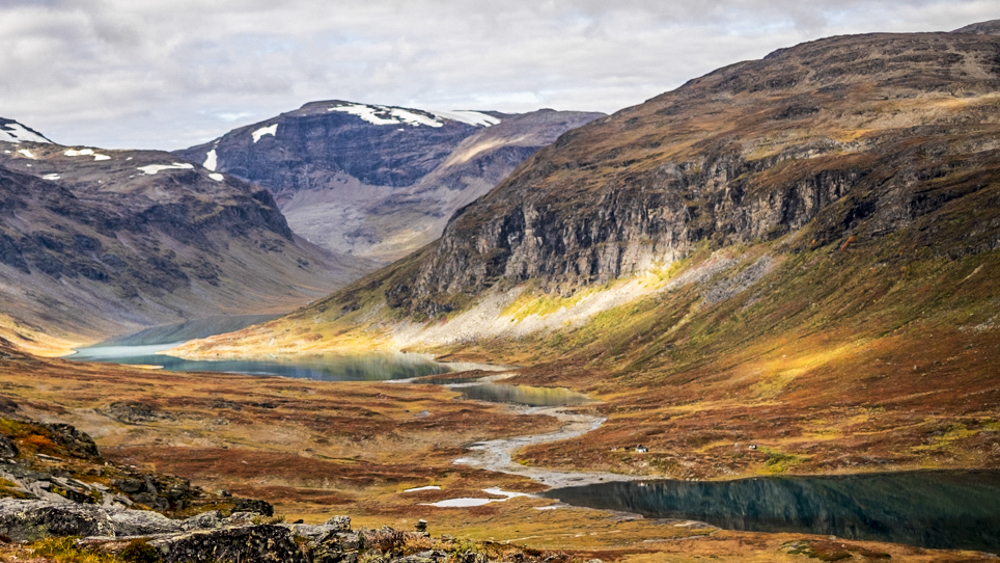
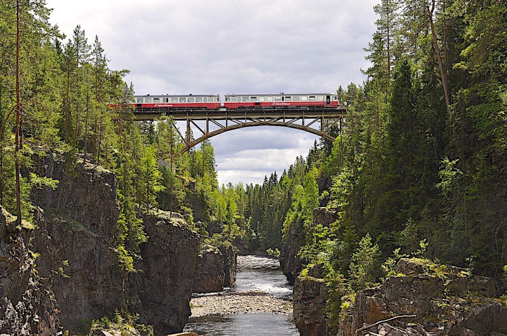
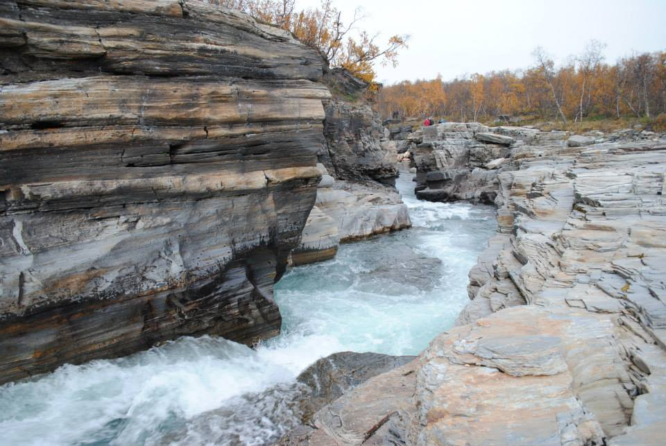
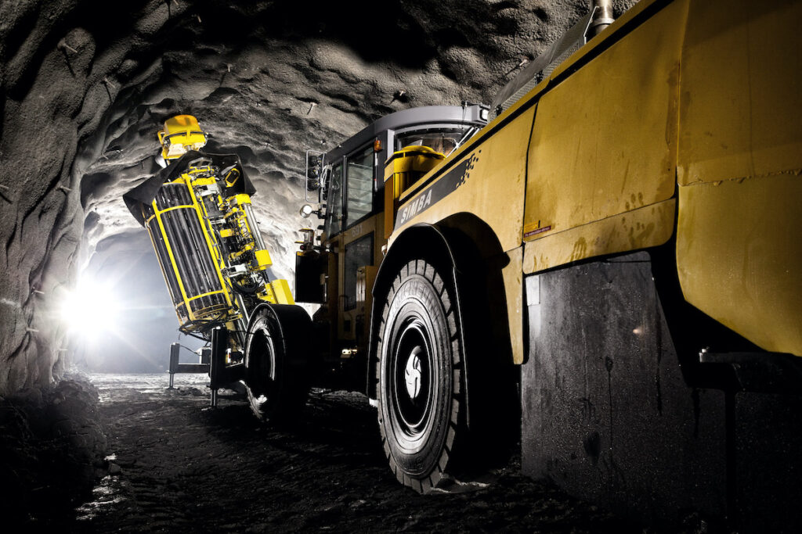
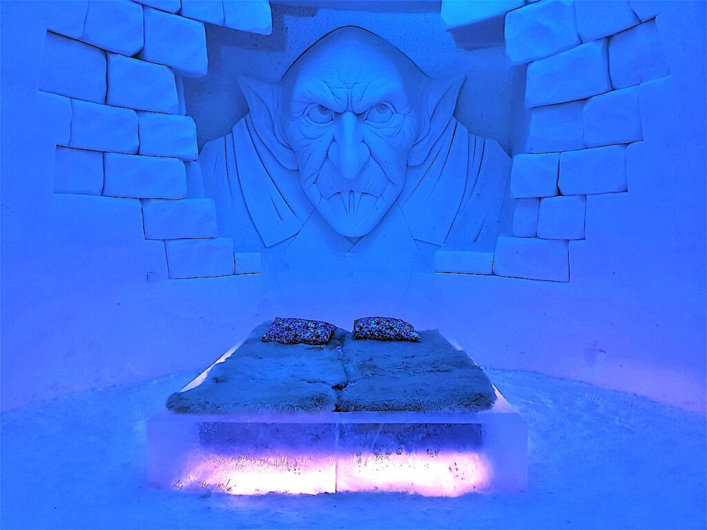

Lappland har hela sju nationalparker och Abisko med fjäll, fjällängar, forsar, Skandinaviens största fjällsjö och mytomspunna trollsjön. Sarek nationalpark med Sveriges största högfjällsområde, där samer har bott och följt renens vandringar i urminnes tider i Jokkmokk.
Semester i Sverige, foto: Davood Mousavi via Wikipedia commons
Inlandsbanan och se naturen från tåget är en smart semester i Sverige, och du kan åka från Mora till Gällivare på två dagar enkel väg. Vilken upplevelse!
Kungsleden mellan Abisko och Hemavan är otroligt känt som en av världens kändaste och bästa vandringsleder. Leden som är drygt 400 kilometer lång och besökts av vandrare från hela världen.
Semester i Sverige, foto: Hanna Gunnarsson via Wikimedia commons
Guidad tur under jord! Gruvan i Kiruna är världens största underjordiska järnmalmsgruva där man bryter från gruvor, en på 1250 och en på 1365 meter under jord.
Bild LKAB
Kända Piteå havsbad camping för hela familjen som vi besökte med tonåringar 2010 och här finns artificiell sol 365 dagar om året, äventyrsbad, kupolbiograf, bowling, äventyrsgolf, lekland, dinosaurieland, gocart, spelhall, tivoli, höghöjdsbana och vattenskidlift
Storforsen och storforsens naturreservat längs Piteåälven är faktiskt Norrbottens största sevärdheter med ett fall på över 60 meter och en av Europas största forsar.
UNESCO världsarv är Världens bäst bevarade kyrkstad “Gammelstads kyrkstad” med över 400 kyrkstugor med Norrlands största medeltida stenkyrka utanför Luleå. Ett fantastisk besök på din semester i Sverige.
Haparanda skärgård nationalpark består av 652 öar där den mest besökta är Sandskär i den Norrbottniska skärgården. Orörda långgrunda stränder och rikt fågelliv i Bottenvikens skärgård.